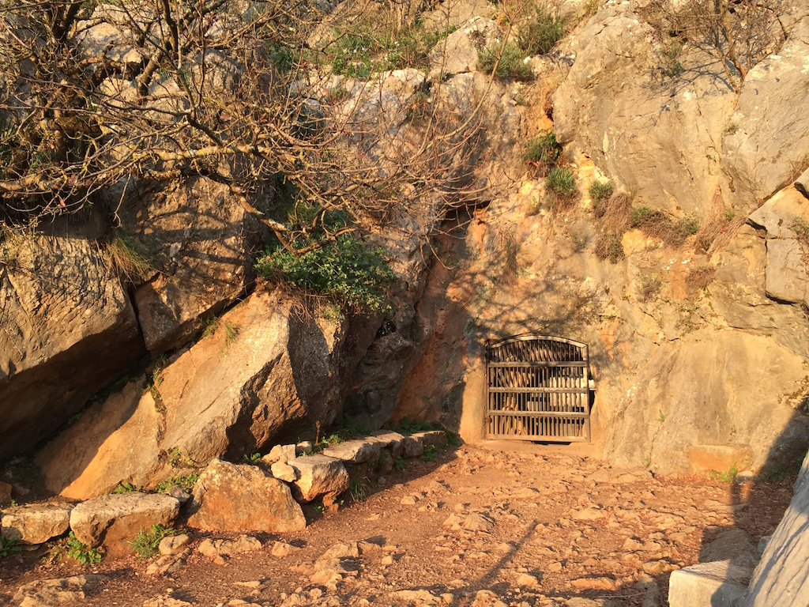
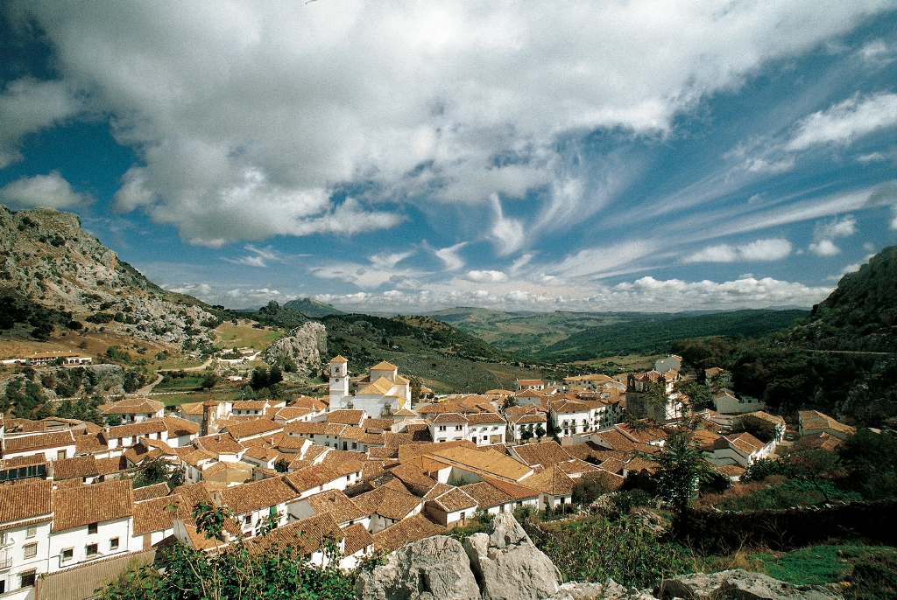
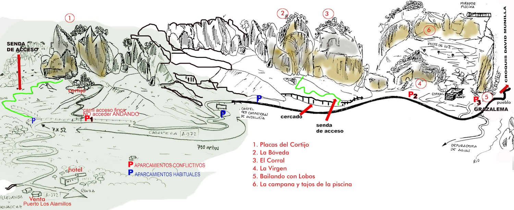

Parque Natural Sierra de Grazalema
El Parque Natural de la Sierra de Grazalema es una joya natural ubicada en la provincia de Cádiz y parte de la de Málaga.
Declarado Reserva de la Biosfera en 1977 por la UNESCO, es un espacio que destaca por sus profundos valles, montañas y la biodiversidad que alberga.
Es hogar de especies como el pinsapo, un abeto endémico, y el buitre leonado. Ofrece rutas de senderismo impresionantes, como la Garganta Verde
y la subida al pico El Torreón, el punto más alto de la provincia de Cádiz.
Garganta Verde

La Garganta Verde es uno de los cañones más espectaculares de Andalucía, ubicado en el Parque Natural de la Sierra de Grazalema.
Este profundo desfiladero de más de 400 metros de altura ofrece una de las rutas de senderismo más impresionantes de la comarca.
La flora que lo rodea es de gran interés, y su fauna incluye el avistamiento de colonias de buitres leonados. La ruta tiene una dificultad moderada,
pero recompensa con vistas panorámicas y una experiencia inolvidable en la naturaleza.
Cueva de la Pileta

La Cueva de la Pileta, situada cerca de Benaoján, es un importante yacimiento arqueológico conocido por sus pinturas rupestres paleolíticas.
Estas cuevas fueron habitadas por nuestros ancestros hace más de 30,000 años y contienen arte rupestre en perfecto estado de conservación.
Dentro de la cueva, se pueden apreciar figuras de caballos, ciervos, peces y símbolos geométricos que revelan la creatividad y
cultura de los habitantes prehistóricos de la zona. Es un lugar imprescindible para quienes desean conocer la historia más remota de la Sierra de Grazalema.
Pueblo de Grazalema

El pueblo de Grazalema es conocido por ser uno de los más hermosos de la Ruta de los Pueblos Blancos. Con sus calles estrechas y empedradas,
y sus casas de fachadas blancas adornadas con flores, es un destino perfecto para quienes buscan una inmersión en la tradición andaluza.
El pueblo también cuenta con una oferta gastronómica destacada, famosa por sus quesos de cabra y oveja, además de platos tradicionales como
la sopa de Grazalema. Pasear por Grazalema es descubrir la esencia de la Sierra.
Ruta de Senderismo El Torreón

La ruta hacia El Torreón, el pico más alto de la Sierra de Grazalema, es una de las más desafiantes y gratificantes para los amantes del senderismo.
Con sus 1.654 metros de altura, esta cumbre ofrece unas vistas impresionantes que abarcan desde las montañas de Cádiz hasta las costas del Mediterráneo
en días despejados. La ruta tiene una dificultad moderada a alta debido a su inclinación, pero el esfuerzo vale la pena al llegar a la cima y disfrutar
del paisaje. Ideal para excursionistas experimentados que buscan una aventura inolvidable.
Deportes de Aventura

La Sierra de Grazalema es un paraíso para los amantes de los deportes de aventura. Desde escalada en roca en sus formaciones calizas hasta espeleología
en cuevas como la Cueva del Gato, las opciones son diversas y emocionantes. Los aventureros también pueden disfrutar de experiencias únicas como el parapente,
lanzándose desde los altos picos de la sierra y disfrutando de vistas aéreas espectaculares de la comarca.
Sin duda, un destino ideal para quienes buscan adrenalina en medio de la naturaleza.
Escalada

La sierra es conocida por sus impresionantes formaciones rocosas, perfectas para la escalada.
Las paredes de roca caliza ofrecen rutas para todos los niveles, desde principiantes hasta escaladores experimentados.
Proveedor: Grazalema Aventura
Barranquismo


Las gargantas y ríos de la Sierra de Grazalema son ideales para la práctica del barranquismo. Descenderás por cañones y
saltarás en cascadas naturales, disfrutando de una experiencia llena de adrenalina.
Proveedor: Horizon Nature, que ofrece rutas guiadas por la famosa Garganta Verde.
Espeleología

Explora las profundidades de la tierra en la Sierra de Grazalema con actividades de espeleología.
Lugares como la Cueva del Gato o la Cueva de la Pileta ofrecen experiencias inolvidables en sus cuevas llenas de estalactitas y estalagmitas.
Proveedor: Barranquismo Aventura
Kayak

Practica kayak en los embalses de la comarca, como el de Zahara-El Gastor, y disfruta de las vistas a la sierra mientras navegas por
sus aguas cristalinas rodeado de naturaleza.
Proveedor: Genatur, organizan salidas en kayak en los embalses de la
Sierra de Grazalema.